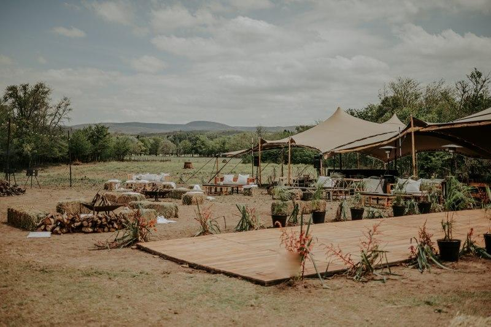

Eventos Privados
En Alfa Corral creamos el ambiente ideal para eventos privados y celebraciones únicas. Nuestro espacio en plena naturaleza ofrece el entorno perfecto para compartir momentos especiales con familiares y amigos, rodeados de tranquilidad, verde y aire puro.
